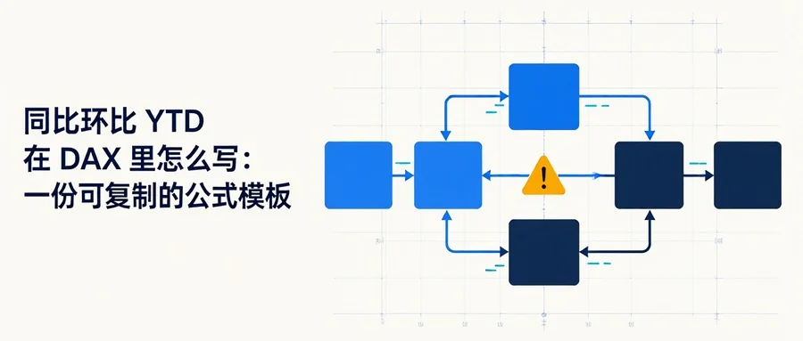
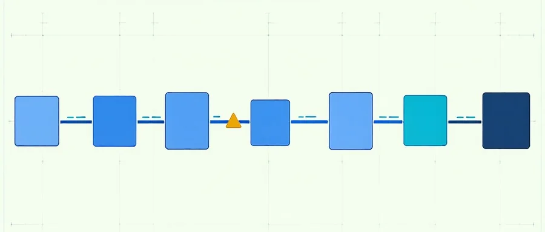
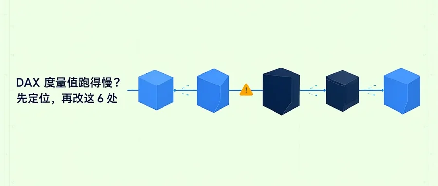
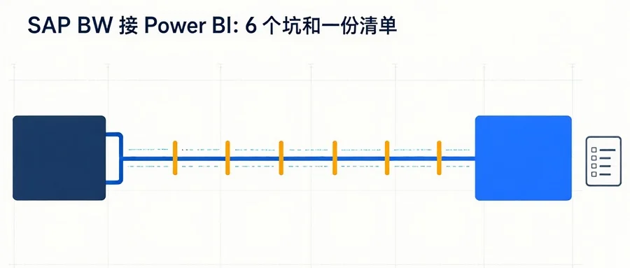

从写 DAX 到接任务：这五条更新指向同一个方向
这周五条更新指向同一件事：AI 开始接任务。Osmos 替人做完整项目，SQLBI 把重心移到验收，Copilot 合并入口。生产变便宜了，交接没有。
阅读全文Blog·13 篇
Power BI、DAX、SAP BW、Microsoft Fabric。每篇都来自手上的项目：先说清问题，再给能直接抄走的做法。
这周五条更新指向同一件事：AI 开始接任务。Osmos 替人做完整项目，SQLBI 把重心移到验收，Copilot 合并入口。生产变便宜了，交接没有。
阅读全文Fabric 和 Databricks 不是二选一。按技能栈、数据量、团队、预算四个维度判断，一张表给结论。
阅读全文
同比环比算错，九成不是公式问题，是日期表。六套度量值模板，复制就能用。
阅读全文
RLS 配错，泄露的不是报表，是数据。静态角色、动态角色两套写法与 6 个失效原因，一次讲清。
阅读全文
云成本看板不是账单复读机。账单、分摊、归属、决策四层，每层要什么数据、哪里最容易错，一次讲清。
阅读全文
DAX 慢，多半不是公式写法，是没定位。6 个技巧，每个给前后对比。
阅读全文
SAP BW 接 Power BI，卡点在连接之前：选型、组件位数、查询发布和授权。附六个高频坑与上线清单。
阅读全文
语义模型正从计算中心变成契约层。五条更新看同一个方向：下面管好 Delta 文件，上面守住访问边界。
阅读全文
Fabric 四条更新全在拆边界：跨租户共享、私有链路、SQL 池统一。接入变简单了，治理反而更贵。
阅读全文
SQLBI 两周连发三条：模型基准、MCP 装库、AI 写作课，外加 Direct Lake 计算列。AI 写 DAX 已经及格，真正难的是验收——读得懂、装得对、出了问题兜得住。
阅读全文
OneLake 安全 GA：权限定义一次，引擎共用。但建外部表不等于授权，这条边界要先弄清。
阅读全文
Fabric 五条更新：入口从报表扩散到应用、Agent 和聊天，但权限与业务逻辑必须留在原地。
阅读全文新版 Get Data 方向对了，但四个坑还没填完。现在该不该切过去？分三种情况说清楚，最后一种可以直接忽略。
阅读全文这个标签下还没有文章。